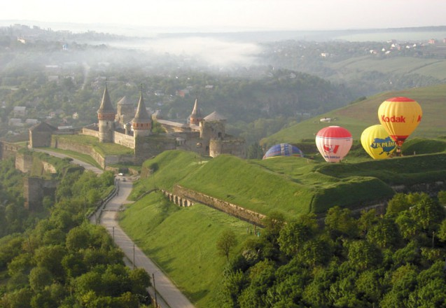

Місто Кам’янець
Кам’янець-Подільський – місто, що зберегло дух середньовіччя. Своєрідність і унікальність його полягають у гармонійному поєднанні ландшафту з містобудівною структурою середньовічного міста, в якому військові інженери, використовуючи чудові природні властивості, створили фортифікаційну систему, що не має аналогів у Європі.
Кам’янець-Подільський хоч не є обласним центром, проте займає третє місце після Києва та Львова за кількістю пам’яток старовини і культури.
Національний історико-архітектурний заповідник „Кам’янець” є одним із найстаріших на території України. Загальна площа заповідника сягає 121 га та налічує майже 200 пам’яток архітектури.
До творення неповторного архітектурного обличчя міста у різні періоди історії доклали майстерності своїх рук архітектори й скульптори з Італії, Нідерландів, Вірменії, Польщі, Франції, Туреччини та ін.
Сьогодні чимало туристів висловлюють захоплення вдалим поєднанням потужних оборонних мурів міста, Старого замку (XII–XVIII ст.) та високих стрімких скель каньйону річки Смотрич. Не менш привабливий для любителів фортифікації і комплекс укріплень Нового замку, збудований у XVII ст., що є єдиним збереженим зразком такого типу споруд нідерландської школи.
Неабиякий інтерес викликає і унікальний Замковий міст, що сполучає Старе місто із Замковим комплексом. Досі існує немало суперечок щодо його походження. Деякі науковці стверджують, що міст було закладено ще римлянами у II ст. під час походу Траянового війська на Дакію.
До складу Кам’янецької фортеці входять одинадцять башт, кожна з яких має свою назву й історію. Так, наприклад, найвища башта названа Папською тому, що була збудована на кошти, виділені папою римським Юлієм II. Ще її називають Кармелюковою, бо в ній тричі був ув’язнений український народний герой Устим Кармелюк. У Чорній (кутовій) башті знаходиться криниця глибиною 40 м і в діаметрі 5 м, видовбана у скелі. Досі тут збереглося величезне дерев’яне колесо з пристроєм для підняття води на поверхню.
У підземеллях Замкового комплексу відкрито експозиції, що відтворюють сторінки його історії. У західному бастіоні реконструйовано оборону замку 1672 р. під час турецької навали. У східному бастіоні розміщено експозицію, присвячену історії легкої метальної зброї на Поділлі, де відвідувач може вистрілити з арбалета та відчути себе середньовічним воїном. До нашого часу збереглася система ходів і казематів.
Сьогодні за попередньою домовленістю можна стати учасником нічної театралізованої екскурсії по Старій фортеці. Екскурсію у вежах (баштах) і підземеллях фортеці проводить кам’янецький „староста” та його „свита”, які цікавими розповідями, піснями, танцями не лише знайомлять екскурсантів з історією замку та озброєнням, а й створюють неповторне відчуття подорожі у часі.
Відвідувачі музею мають змогу також покататися на конях, постріляти з арбалетів та луків, власноруч викарбувати пам’ятну монету. За погодженням з адміністрацію на території можливе проведення корпоративних заходів: концертів, весіль, ювілеїв, офіційних вечерь, прийомів, конференцій, рекламних та доброчинних акцій тощо.
На замітку Кам’янець-Подільський – місто обласного підпорядкування, центр Кам’янець-Подільського району Хмельницької області. Розташоване на відстані 503 км від столиці України – Києва – та за 102 км від обласного центру – м. Хмельницького.
Довідково Адреса: 32300, Хмельницька обл., м. Кам’янець-Подільський, вул. П’ятницька, 9. Тел.: (03849) 239-45.